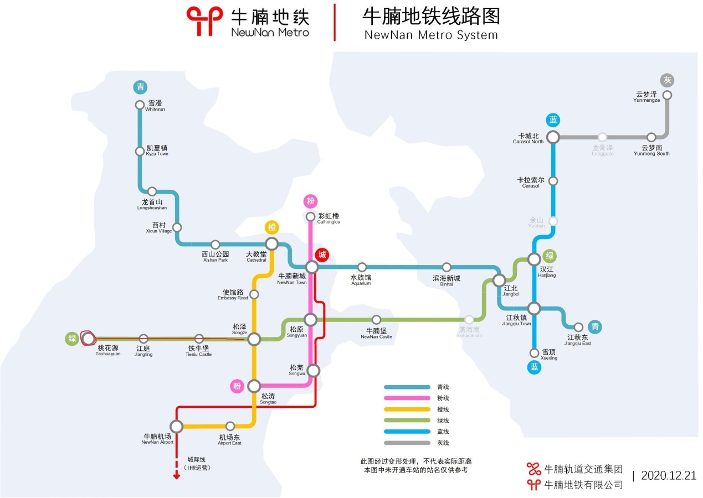
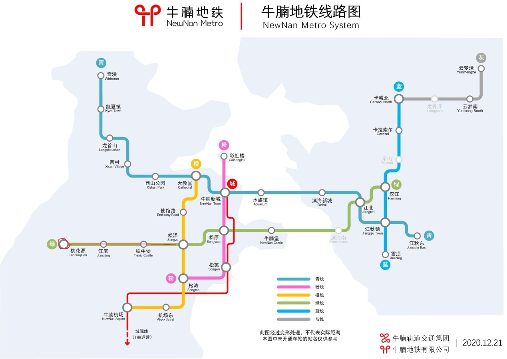

小镇介绍
成员介绍
backlight：桃花源镇长兼建筑部部长
Blackbaker：工业部部长
xiong_kai：副镇长
longzai：后勤部部长
地理位置
桃花源位于主城以西，是距离主城最近的小镇，乘坐牛腩地铁绿线即可到达。
如图所示：
backlight：桃花源镇长兼建筑部部长
Blackbaker：工业部部长
xiong_kai：副镇长
longzai：后勤部部长
桃花源位于主城以西，是距离主城最近的小镇，乘坐牛腩地铁绿线即可到达。
如图所示：
桃花源具有相当完善的工业体系，有大型刷怪塔、附魔品种多样的村民交易所、经验熔炉、高速熔炉、树场、鱼场等设施，工业区内配有公共仓库，桃花源公民可以在此各取所需（但要注意拿取的数量，用多少拿多少）。有了强大的工业基础做后盾，桃花源公民可以快速渡过发育期，尽情做自己想做的事。
桃花源的政治制度为民主共和制，小镇风格为中式。镇民可以对小镇的发展提出自己的看法，经过管理组同意后可以采纳。桃花源分为三个部门，分别为建筑部、工业部和后勤部。建筑部负责桃花源城区的建设，工业部负责工业区机器的建造和维护，后勤部负责工业区内公共仓库的补货和提供大型工程所需原料。三个部门相互配合，共同建设美丽的桃花源！此外桃花源还出台了以《牛腩法典》为基础的《桃花源法典》，加入桃花源后请认真阅读《桃花源法典》，以免带来不必要的损失。
桃花源是一个和谐的小镇，大家相处很融洽。在这里你可以暂时抛开现实生活带给你的种种身份，只是作为一个桃花源公民去做自己想做的事。搭建一个好看的建筑、制作一台性能强大的红石机器，抑或是提出一个与众不同的新点子（尽管它有时候可能是个馊主意）。正是一件件这样的小事交织，才形成了现在和谐友善的桃花源。
桃花源目前缺少建筑师进行城区的建设，如果你擅长中式建筑或对中式建筑感兴趣，那欢迎你来桃花源！
点此加入我们